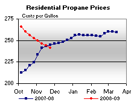
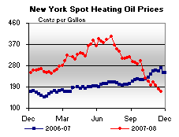

Released on November 26, 2008
(Next Release on December 3, 2008)
Fuel Ethanol Margins: Boom and Bust Cycles
Short-term profit margins for dry mill ethanol producers have been consistently low by historic standards since the last quarter of 2007, even as the prices of crude oil and gasoline rose through mid-July and have since fallen dramatically. Profit margins during the first half of 2008, when oil and gasoline prices were rising, were held down by high input costs and a substantial growth in production capacity in the wake of the 2006 boom in ethanol markets. The bottom line: In spite of being the recipient of government subsidies and mandates, ethanol has not avoided the boom and bust cycles seen in other commodities, though it has followed a different tempo. In fact, ethanol was already in a bust period when the current financial crisis, which has now added to the industry’s problems, hit.
For decades, fuel ethanol has been a blendstock for gasoline, serving at various times as a volume enhancer, an oxygenate, an octane booster, and, more recently, as an alternative to methyl tertiary butyl ether (MTBE) for blending into reformulated gasoline (RFG) as discussed in the This Week in Petroleum (TWIP) article entitled Oxygenates: Btu over a Barrel. Demand for ethanol has grown rapidly since about 2003 in response to State bans on MTBE, federal mandates to blend more fuel ethanol into motor gasoline, and, especially in recent years, attractive prices relative to gasoline. Producers have built new, more efficient plants to meet this growing demand. Yet in spite of increases in demand and far more efficient production overall, profitability has varied widely, especially in one portion of the industry – the dry mill sector, which represented about 80 percent of ethanol production in 2007. Most new facilities have been dry mill plants. These plants are smaller and less complex than their wet mill counterparts and, hence, less expensive and quicker to construct.
We can estimate the profitability trends of dry mill ethanol plants by estimating a variable cost margin – that is, comparing spot prices for variable cost inputs and revenue outputs with all prices converted to their ethanol equivalent in cents per gallon (cpg). Figure 1 shows the comparison over time. The cost side includes the net cost of corn – that is, the full cost of the corn, less the value of an important ethanol byproduct used as an animal feed - dried distiller’s grains with solubles (DDGS). It also includes the cost of energy used to make ethanol, mostly electric power and natural gas, as well as a series of other costs. Figure 1 shows ethanol revenues as the Chicago spot price for ethanol. The difference between the price revenue and the total variable cost is the ethanol producer’s estimated variable margin.
Figure 1 shows that the producer’s variable margin was quite high in 2006, but has been low this year even as the price of ethanol rose during the first half of the year. Part of the reason for the low margins has been the fact that both corn and energy prices rose rapidly during the first half of the year. But that is not the whole story. Figure 2 compares spot ethanol price (net of the tax credit for gasoline blending) with the Chicago spot conventional gasoline price since 2003. Generally speaking, ethanol roughly tracks the gasoline price, with occasional excursions below (in 2005) and above (in 2006). But from the middle of 2007 until the very recent dramatic fall in gasoline prices, the price of ethanol lagged far behind that of gasoline. A major reason is that the ethanol industry invested in a significant amount of new production capacity in response to the boom of late 2005 and 2006, but infrastructure to deliver and blend the ethanol into gasoline has not expanded as rapidly, creating supply surplus relative to demand.
| Note: At the terminal, the value of fuel ethanol for the gasoline blender is the spot price of ethanol minus the 51 cent-per-gallon tax credit. Fuel ethanol's value after the tax credit is what is used in the economics of blending gasoline. |
To see why this happened, it helps to understand the recent boom-bust cycles for ethanol. The first bust for the ethanol industry occurred in the early months of 2005, following a period of rising ethanol demand from 2003 through 2004 as it replaced MTBE in response to State bans over concerns about groundwater contamination. The increased demand for ethanol helped increase producer margins in 2004, but the boost in margins was short lived. In the fall of 2004, a Federal Court stayed the EPA’s requirement for Atlanta, Georgia to begin using RFG. As a result, the extra production and stock build-up intended to serve the new regional market for ethanol turned into a glut that drove spot prices and the spot margin down nearly 75 cpg during the first months of 2005.
The spot margin swiftly rebounded starting in May 2005, however, climbing from 3.5 cpg to $2.85 per gallon in June 2006. Hurricanes Rita and Katrina accentuated the boom when they struck in the fall of 2005. The spike in the weekly fuel ethanol margin topped out temporarily on September 1 at almost $1.50 per gallon before falling back. Although energy costs to produce ethanol rose during the second half of 2005, these increases had little effect on the margin since they were largely offset by a 9-month, 20-cent decline in the net corn price.
In August 2005, the President signed into law the Energy Policy Act (EPAct) of 2005 with a Renewable Fuel Standard (RFS) of 7.5 billion gallons per year – about 490 thousand barrels per day (kbd) – by 2012. A more immediate impact of EPAct, however, arose as it became evident that refiners had decided to quickly eliminate the use of MTBE in response to litigation concerns falling out of the legislation. All refiners that had not already eliminated MTBE discontinued it before or during the winter-summer switchover in spring 2006. The surge in fuel ethanol demand surrounding the elimination of MBTE accounts for the big peak on June 22, 2006 when ethanol prices exceeded $4.00 per gallon and the margin topped off at $2.85 per gallon (Figure 1). Figure 2 shows the tightness in the ethanol market as the blender's fuel ethanol prices after tax credits were at a premium to regular gasoline from April through July 2006.
But supply was already responding rapidly to the strong price signals. Domestic production increased 29 percent over the 12-month period from December 2005 to December 2006. Imports at 52 kbd in June more than doubled those in May, and doubled again by August to 100 kbd. In the 14 weeks after the June peak, the spot price lost about 58 percent. With underlying variable costs remaining relatively constant, the margin tumbled from $2.85 per gallon to 53 cpg.
For the long term, the most important aspect of the 2005-06 boom was that it led to a continuing increase in production capacity, as many new ethanol plants entered operation and others began construction. Furthermore, dry mill plants had become larger and more efficient since 2005. Supply now outpaced demand, and ethanol prices continued to slide for much of 2007, in spite of increasing demand. On top of weakening ethanol prices, production costs were rising. Corn prices began to increase in the fall of 2006. The ethanol producer margin approached zero in late September and October 2007. It is likely that some plants even experienced negative margins at this time. By mid-October, corn prices started a steeper rise and put upward pressure on fuel ethanol prices. Still, the value of fuel ethanol at blending terminals remained at a discount to gasoline until just recently, as gasoline prices have cratered along with crude oil prices. Costs have fallen since July of 2008, and ethanol prices have fallen in tandem, with margins staying low.
The Energy Independence and Security Act (EISA) of 2007, signed into law in December 2007, doubled the corn-based ethanol mandate to 15 billion gallons per year (about 980 kbd) by 2022, but this did not do much for margins in the short term, as shown in Figure 2. EIA estimates total ethanol production capacity in August 2008 at 10.2 billion gallons per year, with potential increases from planned or ongoing construction up to 13.2 billion gallons per year by the end of 2009.
Residential Heating Fuel Prices Drop Again
Residential heating oil prices experienced their seventh straight week of falling prices this season during the period ending November 24, 2008. The average residential heating oil price fell 12.0 cents last week to reach 271.0 cents per gallon, which was a drop of 57.7 cents from this time last year. Wholesale heating oil prices decreased by 9.4 cents, reaching 183.6 cents per gallon, which was a decrease of 93.1 cents compared to the same period last year.
The average residential propane price decreased 3.2 cents to reach 241.1 cents per gallon. This was a decrease of 3.8 cents from the 244.9 cents per gallon average for this same time last year. Wholesale propane prices decreased 3.0 cents per gallon, falling from 84.2 cents to 81.2 cents per gallon. This was a decrease of 80.9 cents from the November 26, 2007 price of 162.1 cents per gallon.
U.S. Average Gasoline Price Plummets Below $2 a Gallon
For the tenth week in a row, average gasoline prices fell in all regions of the country and for the first time since March 7, 2005, the U.S. average price for regular gasoline fell below $2 a gallon. The national average tumbled 18 cents to hit 189.2 cents per gallon, settling 222.2 cents below the all-time high set on July 7 of this year, and 120.5 cents lower than the price a year ago. Prices also fell below $2 a gallon in four of the five major regions. The average price on the East Coast slumped 16.1 cents to 195.3 cents per gallon. After falling 18.3 cents to 175 cents per gallon, the average price in the Midwest was the lowest of any region. Although the drop of 15.1 cents on the Gulf Coast was the smallest of any region, at 180.5 cents per gallon, the price was the lowest that region had seen since January 24, 2005. In the Rocky Mountains, the price slipped 18.6 cents to 184.7 cents per gallon. Although the West Coast price not only fell for the twenty-second consecutive week but also decreased more than any other region, tumbling 24 cents to 211.7 cents per gallon, it nonetheless remained the only region above $2 a gallon. The price in California plummeted 26.2 cents, settling at 211.2 cents per gallon.
The U.S. average price for diesel fuel fell 14.5 cents to 266.4 cents per gallon, the lowest it has been since March 5, 2007 and 78 cents lower than the price a year ago. Prices also continued to drop in all regions throughout the country. The average price on the East Coast slipped the least of the regions, dropping 13.6 cents to 278.8 cents per gallon, 66.5 cents lower than the price a year ago. Prices in the Central Atlantic and New England portions of the East Coast region slipped below $3 a gallon for the first time since September 10, 2007. Declining 14 cents, the price in the Midwest reached 262.4 cents per gallon. The average price in the Gulf Coast dipped 14.7 cents to 259.8 cents per gallon, remaining the lowest price for any region. The price in the Rocky Mountains dropped the most of any region, slumping 17.8 cents to hit 264.4 cents per gallon. On the West Coast, the average price fell 16 cents to settle at 260.8 cents per gallon. In California, the average price shrank 14.9 cents to 260.5 cents per gallon.
Propane Inventories Slip Lower
Primary inventories of propane slipped lower by a modest 0.1 million barrels last week, settling at an estimated 60.3 million barrels as of November 21, 2008. Over the past four weeks, propane inventories have remained between 60.4 million barrels and 60.3 million barrels, a relatively narrow stock range for this period. Consequently, primary inventories of propane have slowly moved closer to the lower boundary of the average range for this time of year. Regionally, the 0.5 million-barrel inventory gain in the Gulf Coast last week was offset by the 0.5 million-barrel inventory loss in the Midwest. Inventories in both East Coast and the combined Rocky Mountain/West Coast regions edged lower by 0.1 million barrels during this same time. Propylene non-fuel use inventories remained relatively unchanged last week, but accounted for a slightly lower 5.5 percent share of total propane/propylene inventories. This compares with the prior week’s share that totaled 5.6 percent.
Text from the previous editions of “This Week In Petroleum” is now accessible through a link at the top right-hand corner of this page.
| Retail Prices (Cents Per Gallon) | |||||||
|  | |||||||
| Retail Data | Changes From | Retail Data | Changes From | ||||
| 11/24/08 | Week | Year | 11/24/08 | Week | Year | ||
| Gasoline | 189.2 | Heating Oil | 271.0 | ||||
| Diesel Fuel | 266.4 | Propane | 241.1 | ||||
| Spot Prices (Cents Per Gallon*) | |||||||||||||||||||||||||||||||||||
|  | |||||||||||||||||||||||||||||||||||
|
|||||||||||||||||||||||||||||||||||
| *Note: Crude Oil WTI Price in Dollars per Barrel. | |||||||||||||||||||||||||||||||||||
| Stocks (Million Barrels) | |||||||
| Stocks Data | Changes From | Stocks Data | Changes From | ||||
| 11/21/08 | Week | Year | 11/21/08 | Week | Year | ||
| Crude Oil | 320.8 | Distillate | 126.7 | ||||
| Gasoline | 200.5 | Propane | 60.292 | ||||